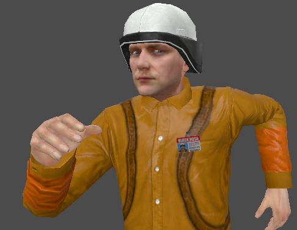

Mark IV?
The one from HL1 is the Mark IV, the one in HL2 is the Mark V. The implication is that BM ordered some of the new models to trial / supplement the old ones, but didn’t get to use them because of the RC.
Don’t know if it’s canonical, but that’s a good idea.
Text, I’ve read the recent posts and I didn’t find anything related to the inclusion or not of the loader. Are we still going to see it in B2?
I hope we do see one somewhere, those Loaders are cool.
Okay, got FP to actually load the thread so I could get the pictures.


- Custom textures by Impetuous
- Construction model edit by Maestro Fenix
- Inspiration by me (by being crap at textures
 )
)
After the Vort/HECU/Houndeye battle, I run around all the rooms just incase there is health/ammo anywhere.
I then run down to the end of that corridoor and turn right into the cafeteria.
I replicated what I did the first time and this time he was properly spawned, so I’m not entirely sure what I did the first time time that caused it to happen. Of the 4 times I’ve run through OaR uncut A, that issue has only happened once.
Sorry, I wasn’t of much assistance. 
Okay, so that’s a pretty big no no to the Houndeye idea. I wasn’t really planning seriously on doing it anyway, it was just a neat thought.
I think at this point maybe I’m going a bit too far with trying to cram interesting ideas and unique little tidbits into the final map. It’s unnecessary, the setting itself is already pretty unique. The Trainyard’s looking really good right about now, and it’s only 50% finished or so.
I’ve revised my idea for the skybox - it’s going to more be distant warehouses and roads stretching off far far away, along with several rail tracks, showing just how expansive the mat trans system is. There may still be some kind of amazing distant vista but we’ll see. It’s a more realistic goal (it’ll resemble the skyboxes on C2A5G from ST Uncut a little bit) and will further reinforce the size of BM’s train systems and all that.
Might have an empty cage somewhere in B2 but we’ll see about that.
I also quite like the security vs HECU fight in the warehouse, will definitely look to script that. Will definitely need to make it so that it isn’t possible for the security guards to survive.
Probably not. Again it’s just me going overboard with ideas and trying to overload the final map with interesting and unique things. It doesn’t need to happen.
This stuff looks pretty damn good. Will have to throw down some lines at Facepunch to see if we can get it to be even better. Cheers Someguy.
If you can get there, haha. Garry banned 1500 cheaters from Gmod. Forums have been getting ddos’d for at least 8 hours straight. They came back on briefly, but they’re gone again now.
Oh so that’s why FP was down. Can’t keep track of the HL2 properly (not that it moves too fast day by da anyway). Can be a bit toxic of a community anyway, so I steer clear of posting.
As for the HECU vs Security. Stupid comment, but is it ever possible for the guards to win? I imagine even if it was like 5 vs 9 respectively, the HECU would still win just because of how kind of derpy the security guys are. They fire slower, thus less damage overall (since MP5 vs Glock, 9mm’s, same damage, just depends on rate of fire), they have less health than grunts (40 vs 50) and maybe it’s just me but they seem to run around a lot more sometimes, compared to shooting.
Just make sure no more than 2 have a magnum and we’re set, though I think you know all this, considering your excellent balance with the ST fights.
As for the actual fight, what are the parameters for the actual fight? (Sorry if it was said somewhere, I must’ve missed it). Ambush (on either sides part), or is it kind of “oh we just ran into each other”.
You’d be surprised by my test results then. 10 tests, 4v4 medium range. Security victory 10/10 times. It was actually much worse than I thought.
One problem I observed with the tests is that the HECU AI is just kinda retarded. Half the time one or more soldiers (in one case all 4) just stare at the security guys for 3-5 seconds before shooting. The Security on the other hand, fire somewhat slowly, but deadly accurate, as opposed to the soldiers who fire automatically but are very inaccurate (ironic since the #2 complaint with them is high accuracy).The average result was 4 HECU dead, 1 Guard dead, but 2 Guards dead wasn’t too uncommon.
Interestingly, in aside from the HECU AI being fucktarded sometimes, I noticed something. I noticed the battled tended to ‘snowball’ because the Security AI would all pick on one soldier, killing him in 2 seconds with their combined accuracy and DPS. The HECU AI on the other hand seemed to pick out targets individually. Of course, they might have just been the HECU’s terrible accuracy making it look like they were shooting at different targets due to the spread. Either way the battle’s snowballed because the Guard’s would wipe one out and move to the next.
I did 5 alternate rounds after those. The HECU won was the CQB round, 2 SMG, 2 SG, at 3 meters. All 4 guards dead, no HECU losses. The HECU also won the ‘fury’ round (I’ll call it that 'cause I’m creative). Same as the first 10, but with sk_human_security_health 10. Ran that one twice, each result was 1 dead HECU, 4 dead Guards. The other 2 I squaded the HECU together but not the Guards. That seemed to prevent them from staring into space during combat, and even allowed them to win one round 4 - 1 K/D. The second time they all died though, probably because I spaced them further apart.
Text might need to get creative with the meddling to get a more favourable result. My suggestions would be try giving the security guys lower starting health, or maybe get creative with npc_bullseyes around the soldiers to ‘throw’ the security’s sharpshooter-like aim (which seems to be the main issue). I’m sure Text has better solutions than I do though.
…what.
What.
[b]WHAT.[b/]
That’s just, I don’t even know. I can’t tell if it’s just hilarious or incredibly sad/dissapointing (at how the AI is). Just, wow. I knew the guards were sharp shooters, but DAYUM son. That’s actually really insane. So first he’ll need to somehow make the HECU win 100% of the time without it being like, 15 on 3, and then somehow factor in the player?
I imagine the easiest, but most boring solution is just not let the player interfere. They can watch the battle, but they can’t access it until a scripted sequence lets them in, via a window blowing/building blowing up, giving you access to the room.
Or like you said, just lower their health or something of the sort, so that even if the player tries to gun down all the HECU, the guards will simply die too fast.
This is why I don’t comment, cause clearly I’m out of my depth when it comes to having good ideas. @_@
Additional question. Is there a way to spawn things from the console, but have them not attack anything? I can use notarget for myself and spawn things, then turn it off and they come to life, but is there any way spawn things to be 100% sleep mode until you turn them on?
I was just running around AM and the first ST map (the very first, with the dam), spawning high amounts of assassins and just trying to take them down, I get bored. Regardless, notarget stops them attacking me (obviously), but they still seek out other targets. I was hoping of doing my own little ‘balance tests’, even if they’re not useful, just for fun, but I’d either have to spawn them far away enough so they don’t get an advantage, or just spawn them all quickly.
Well it makes sense. The guards were meant to be an able assistant to the player. They were never really meant to be amassed anywhere but Office Complex. Plus, there was never meant to be more than one guard fighting Soldiers at a time (alongside the player). It does get outrageous when you start stacking them like that, because that wasn’t intended to happen anywhere in the stock game. We’re kinda breaking the rules in that department.
You could try ai_disable, that’s what I use to make both sides ignore each other until I want them to fight.
That’s good that the train yard is coming along. The sky box sounds like it’s going to be amazing.
I think there needs to be some kind of good reason as to why the security guards would still be alive anyways. Maybe have them hiding in something and bust out thinking they’re saved when Gordon arrives. This surface area was pretty much extremely secured by the H.E.C.U. in the original half-life. And that makes sense because the surface would be the first place the marines would have reached and secured. It’s basically their staging point for sending all of the marines that you’ve encountered in the chapter down into the complex.
Also I don’t know how you would be able to keep the player from picking off the marines and ending up with lots of security guards running around saying either nothing or all saying the same thing and having no where to go.
That gave me an idea, why not some make-shift interrogation cells in some of the warehouses? It’d make sense with the HECU. Might even explain where the guards came from.
Positioning too, you know. It plays a pretty heavy key role on who’s going to win the conflict.
Happy to know that you are expanding the On A Rail chapter as well, cutting it down as well as surface tension made Black Mesa feel way too short. Surface Tension was very fun, so I’m just as excited for this one!
They are very cool. 
I’m kind of “tweaking” my Black Mesa installation. Don’t know if I’ll be able to replace the models just in “Office Complex” and chapters alike, as I am planning to do, but they would make a nice addition to OaR Uncut. I have recently changed the order of appearence for the weapons so I could meet HL’s, escpecially the shotgun/357 and snarks.
They could have just been moving across the surface or come out from underground when they ran into the Soldiers, or they were hiding in the warehouse when the Soldiers came in. It’s not a big deal imo.
As for the second one, I mentioned he could just have the Marines spawn in an endless wave that only stops when all the guards are dead. If the guards are given low health, then that’s even better since it means that won’t be as noticeable as well.
I think you should have the guard/marine fight, but with the guards winning, thus providing another reason for the Hazardous Environment Combat Unit to be pulling out in Surface Tension: the Hazardous Environment Combat Unit is embarrassed at some of their members experiencing defeat at the hands of mere civilian law enforcers combined with the desire to cut their losses as established in the actual game.
sorry but in on the rail the hecu are being shown as AB mother f*ckers. aka it would break the tone of the level if they lost to some pistol wielding guards.
Strongly disagree. In HL it was important that the BMRF personnel lost nearly all their ground. That’s why they attempt to covertly work in small pockets around the facility, the Lambda Team being the largest and most in charge. It goes so strongly against the established story, and it doesn’t even make a lot of sense. Why would the military pull out because a few guards killed some soldiers? Text is trying to improve the HECU’s early presentation, not absolutely shred it.
got an idea (unlikely to happen)
Have the player enter into an area to see the final shots of a gun fight between some hecu and a few guards, (one injured guard, and like 3 dead vs 5 or 6 hecu). this would show that hey the BMRF security team is being wiped out and that you are truly on your own for the most part. bonus points if you can take out the guard with some grenades to show just how over kill they are willing to go.